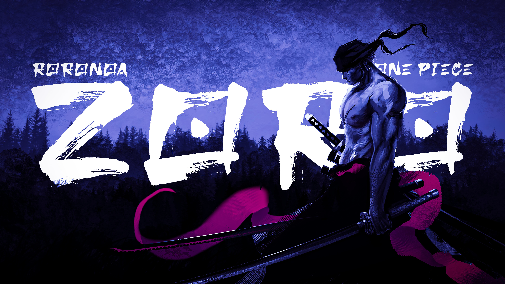

Ronoroa Zoro
The King of Hell

"Convey my will to this blade… now let's see if I am able to cut the Heavens"
Top dialogues by Zoro:
- Hawk Eyes: A wound that'd make an ordinary man unconscious... I won't lose to it. A wound that would kill an ordinary person... I won't lose to it! To face one who is extraordinary, Hawk Eyes... I can't allow myself to be ordinary!
- Boredom: You want to kill me? You couldn't even kill my boredom!
- If I Die Here: If I die here, then I'm a man that could only make it this far!
- Being Strong: Being strong isn't just about having power or move, it about one's spirit!
- Acceptance: You need to accept the fact that you're not the best and have all the will to strive to be better than anyone you face!
- I Don't Care: I don't care what the society says. I've regretted doing anything. I will survive and do what I want to!
- Even One Step Back: I don't know. I'm not sure why myself. But if I were to take even one step back, I believe that all those important oaths, promises and many other deals 'til now, will all go to waste and I'll never be able to return before you, ever again!
- Discarded My Life: When I decided to follow my dream, I had already discarded my life!
- There Is Someone: There is someone that I must meet again. And until that day...not even Death itself can take my life away!
- Shoves You Around: When the world shoves you around, you just gotta stand up and shove back. It's not like somebody's gonna save you if you start babbling excuses!
If you have free time please know more about Zoro at:
Wikipedia Page